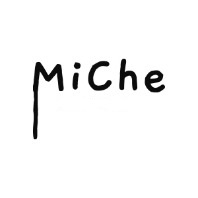

MiChe Arts Collection
 Individual Pieces
"City of Roses" - A love letter to my hometown, 2023. Collage and Acrylic on wood.
"Hey, you know I love complaining about something as much as the next person—and believe me, I sure did for the first 18 years of my life—but you never really know how good you have it until it gets ripped from your hands. And by 'ripped from your hands,' I mean you get an acceptance letter to your dream university, and it only then settles that you have to move out.
Everything that I was accustomed to, poof, bye-bye.
I got used to a lot of things. I got used to 15-minute travel times. I got used to getting driven everywhere. I got used to seeing the same people. I got used to going to the same places. I got used to my free time. I got used to my busy time. I got used to my mom's cooking. I got used to my mom's scolding. To be frank, I got used to Windsor.
But now I gotta go to Waterloo. Even though they start with the same letter, 'W,' I found that did not help in trying to get used to things. I have to get used to walking everywhere since I don't have a car. I have to get used to buying my groceries and cooking my own food. I have to get used to going to places alone because sometimes no one else wants to study in the basement of RCH with you (I'm not sure why; it's a lovely place). And I have to get used to knowing my way around.
It's all quite frustrating, to be honest. I've spent my whole life trying to learn my way around Windsor, memorizing street names and learning key locations, only to have to start all over again. And based on how easily I get lost in Waterloo, I don't think my navigation-learning skills have improved that much.
But alas, I persevere.
...
Oh right, the painting.
I guess I'm trying to say that it's a dedication to my hometown and was a way to express my love for it and how much I miss it, blah blah blah. But that's a little too sentimental for my tastes. So I rant instead because that's what I'm good at (Unless you are an employer, to whom I am exceptionally skilled at getting straight to the point. Rant? Me? Never.)"
- MiChe
"Colour Vision", 2020. Acrylic on canvas.
"Hey, you know I love complaining about something as much as the next person—and believe me, I sure did for the first 18 years of my life—but you never really know how good you have it until it gets ripped from your hands. And by 'ripped from your hands,' I mean you get an acceptance letter to your dream university, and it only then settles that you have to move out.
Everything that I was accustomed to, poof, bye-bye.
I got used to a lot of things. I got used to 15-minute travel times. I got used to getting driven everywhere. I got used to seeing the same people. I got used to going to the same places. I got used to my free time. I got used to my busy time. I got used to my mom's cooking. I got used to my mom's scolding. To be frank, I got used to Windsor.
But now I gotta go to Waterloo. Even though they start with the same letter, 'W,' I found that did not help in trying to get used to things. I have to get used to walking everywhere since I don't have a car. I have to get used to buying my groceries and cooking my own food. I have to get used to going to places alone because sometimes no one else wants to study in the basement of RCH with you (I'm not sure why; it's a lovely place). And I have to get used to knowing my way around.
It's all quite frustrating, to be honest. I've spent my whole life trying to learn my way around Windsor, memorizing street names and learning key locations, only to have to start all over again. And based on how easily I get lost in Waterloo, I don't think my navigation-learning skills have improved that much.
But alas, I persevere.
...
Oh right, the painting.
I guess I'm trying to say that it's a dedication to my hometown and was a way to express my love for it and how much I miss it, blah blah blah. But that's a little too sentimental for my tastes. So I rant instead because that's what I'm good at (Unless you are an employer, to whom I am exceptionally skilled at getting straight to the point. Rant? Me? Never.)"
-MiChe
"Temporary Instance", 2023. Acrylic on paper.
"Sometimes people ask me why I don't paint on more sophisticated or permanent materials like canvas or solid board. My answer was always that I never had one on hand. I don't prepare for my bursts of creativity. I can't really plan for them. So, that's why I use what's at hand - cardboard, paper, wood from the garage, etc. I'm resourceful.
The story for this one, not as fun. So, I'm not going to tell it. I'll rant a little more until the description for this piece is similar in length to the other ones. Maybe one day I'll come back and change it, who knows, I sure don't.
Maybe this is a good place to give a quick tutorial as to how I paint my iconic style. Yeah, that's what I'll do.
STEP 1: It's all about that base.
Whatever you knew about colors, throw it away. The flowers I paint are predominantly red, so what color should the base be? Blue, obviously. No, I'm serious, a dark blue base. I'm not really sure why, but I like to think that it creates the shadow of the object before the object actually exists. Geometry-wise, the base is a literal blob. Detailed shapes are overrated. I don't even bother with petals; that's a different color's problem.
Flowers also have stems and leaves, which, due to the chlorophyll content in their chemical makeup, are green. So, our base will be bright red. Using a base of red or orange really brings out some of the warmer tones of the flower. Makes the whole scene look more alive, which is important since they're flowers.
Now, take a step back and take a good look at your progress!
...Ok, maybe there's some more work to be done.
STEP 2: More reasonable colors
Fine, I'll admit it, I was gaslighting you for a bit. Red flowers aren't actually blue, and green leaves aren't red. So let's just cover those up. Maybe leave a slight outline for that artistic vibe. This is where those thick layers of paint come in. So, take your time, be patient. This is also where the shapes of petals and leaves come in, so come on, chop chop.
STEP 3: Highlights and Lowlights (are lowlights a thing? I'm not sure)
Now, a good rule I use when I make most of my pieces is never to use black or white. Whenever I use those, it just dulls out the bright colors I strive so hard to capture. If I ever do use them, it's to mix them with other colors to widen my hue range. So, use some of the yellows and oranges for your highlights (and some pink if you're feeling fruity today). Build more on shadows with those blues and purples.
ANNNNNND CUT! You're finished. Well, at least you've got the meat and potatoes of my style. You can obviously spice it up as much as you want if you don't find my meat and potatoes flavorful enough, I guess."
- MiChe